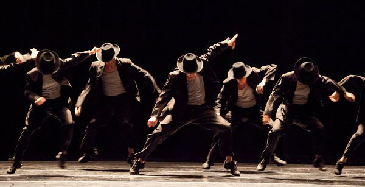

춤을 추기 위해 만든 음악, 또는 춤을 추기 좋은 음악을 통칭하는 단어. 상당히 많은 부분에서 일렉트로닉 뮤직과의 접점을 갖고 있고 영향을 주고 받았으나, 사운드가 어떤방식으로 만들어지는 지에 무관하다는 점에서 일렉트로닉 뮤직과 구별된다.

특징
BPM (Bit Per Minute)
일반적으로 댄스음악의 bpm은 110~130 정도로 쓰이며, 160bpm이상으로 올라갈 경우 춤을 추기 어렵다고 한다.
디스코와 테크토닉
댄스음악은 디스코가 대표적인데, 음악 장르 이름으로 사용되던 디스코는 어느샌가 그 음악에 맞춰 추는 (손가락 찌르기 같은) 독특한 춤을 의미하는 경향도 생기게 되었는데, 그래서 '디스코를 춘다.' 같은 말이 자주 사용된다. 테크토닉은 반대의 경우라고 볼 수 있는데 팔을 휘젓는 독특한 춤사위를 테크토닉이라고 부르기 시작했고, 그래서 이런 춤을 추기 좋은 음악도 테크토닉이라고 자주 보른다. 다만 이러한 용례들은 예외적인 경우에 가깝고, 대중음악에서는 댄스뮤직의 장르와 춤의 이름이 별개인 경우가 일반적이다.